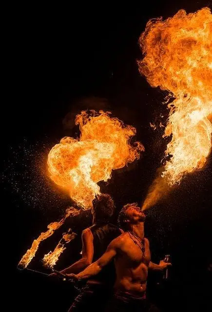
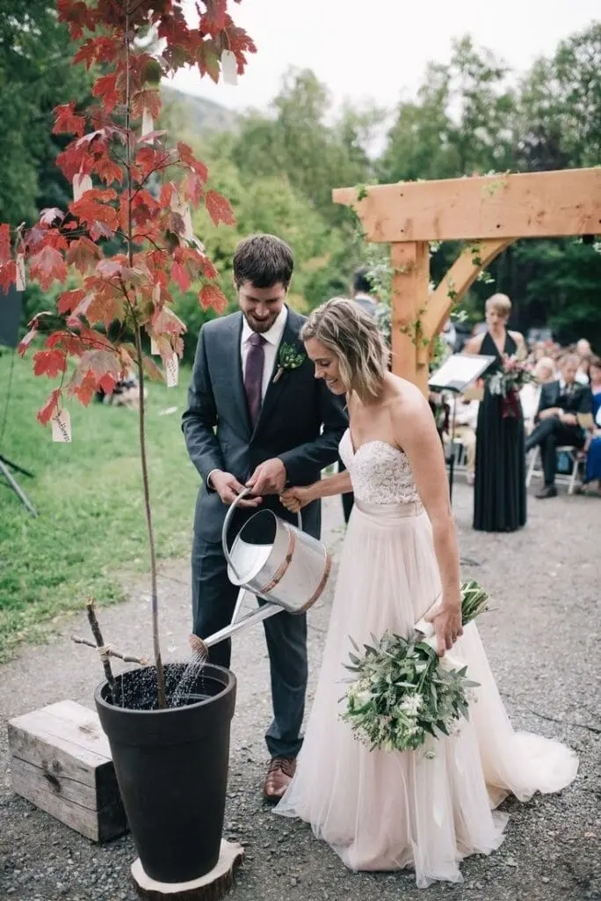

Le mariage en 2026 se transforme en une célébration inoubliable, alliant technologie, créativité et personnalisation. Les couples cherchent désormais à offrir à leurs invités des expériences immersives et expérientielles qui vont bien au-delà des mariages traditionnels.
Pourquoi opter pour une célébration immersive ?
Les mariages immersifs offrent bien plus qu’une simple cérémonie. Ils créent des souvenirs durables et uniques pour les mariés et leurs invités. En immergeant les participants dans un univers thématique et technologique, ces célébrations permettent de vivre des expériences émotionnelles intenses et de renforcer les liens entre les convives. Chaque détail est pensé pour surprendre et émerveiller, rendant ainsi le mariage inoubliable.
1- Technologie et réalité virtuelle
Les mariages de cette nouvelle ère intègrent des avancées technologiques impressionnantes. La réalité virtuelle permet aux couples de se marier dans des décors époustouflants, qu’ils soient réels ou imaginaires. Les invités, équipés de casques VR, peuvent assister à la cérémonie comme s’ils y étaient, même à des milliers de kilomètres de distance. Imaginez échanger vos vœux dans un château médiéval, sous un ciel étoilé, ou encore dans un paysage futuriste digne de la science-fiction.
2- Décors et ambiances thématiques
Les mariages thématiques connaissent un essor fulgurant. Les couples choisissent des thèmes qui reflètent leur personnalité et leurs passions. Les décorations, les costumes et même les menus sont soigneusement sélectionnés pour plonger les invités dans un univers unique. Que ce soit un voyage dans le temps vers les années folles, une aventure fantastique dans un royaume enchanté, ou encore une fête exotique inspirée des traditions culturelles du monde entier, chaque détail est pensé pour créer une expérience inoubliable.


3- Expériences gastronomiques interactives
La gastronomie prend une nouvelle dimension dans les mariages de 2025. Les chefs cuisiniers proposent des menus interactifs où les invités peuvent participer activement à la préparation des plats. Des ateliers culinaires, des démonstrations en direct et des dégustations thématiques ajoutent une dimension sensorielle et participative à la célébration. Les invités peuvent ainsi découvrir de nouvelles saveurs tout en partageant un moment convivial avec les mariés.
4- Animations innovantes et divertissements
Les divertissements traditionnels laissent place à des animations novatrices. Des spectacles de drones lumineux, des projections holographiques et des performances artistiques immersives sont au programme. Les invités peuvent participer à des jeux interactifs, à des ateliers créatifs ou à des activités ludiques qui renforcent le sentiment de communauté et de partage. Les artistes de rue, les musiciens et les danseurs ajoutent une touche de magie et d’émotion à la fête.
5-Personnalisation et souvenirs inoubliables
La personnalisation est au cœur des mariages de 2025. Chaque détail est conçu pour refléter les goûts et les histoires des mariés. Les cadeaux personnalisés, les décorations sur mesure et les expériences rendent chaque mariage véritablement unique. Les souvenirs de mariage prennent également une nouvelle forme, avec des albums photos avec une réalité augmentée, des vidéos immersives à 360 degrés et des souvenirs numériques interactifs que les invités peuvent emporter avec eux.
6- Écologie et durabilité
Dans cette nouvelle ère, les mariages écoresponsables gagnent en popularité, surtout dans la région bordelaise. Les couples cherchent à réduire leur empreinte carbone en optant pour des options durables, telles que des décorations recyclables, des menus bio et locaux, et des invitations numériques. Les lieux de réception écoresponsables et les gestes verts, tels que la plantation d’arbres en l’honneur des mariés, deviennent des choix privilégiés pour ceux qui souhaitent célébrer leur union tout en respectant l’environnement.
7- Rituels et cérémonies symboliques
Le mariage en 2025 se réinvente également à travers des rituels et des cérémonies symboliques uniques. Les couples créent des moments empreints de signification personnelle, tels que des cérémonies de l’unité, des échanges de vœux personnalisés, ou des rituels inspirés par leurs cultures et traditions familiales. Ces moments spéciaux renforcent les liens et ajoutent une dimension profonde et spirituelle à la célébration.

Témoignage des mariés
“Nous avons choisi un mariage immersif dans la région bordelaise afin de surprendre nos invités et créer une atmosphère magique. La réalité virtuelle a permis à nos proches à l’étranger d’assister à notre cérémonie comme s’ils étaient présents. Les décors thématiques et les animations interactives ont fait de notre mariage une expérience inoubliable pour tous. C’était bien plus qu’une simple célébration, c’était un véritable voyage.”
Marine & Jean
Conseils pour réussir un mariage immersif
- Planifiez à l’avance: Les mariages immersifs demandent une organisation minutieuse. Commencez les préparatifs tôt pour avoir le temps de peaufiner chaque détail.
- Choisissez un thème qui vous ressemble: Optez pour un thème qui reflète votre personnalité et vos passions communes.
- Faites appel à des professionnels: Engagez des experts en décoration, en technologie et en animation pour garantir une expérience immersive réussie.
- Pensez aux invités: Assurez-vous que les animations et les expériences proposées sont accessibles et plaisent à tous vos convives.
Budget
Quel budget à avoir pour ce style de célébration ? Les mariages immersifs peuvent être plus coûteux que les mariages traditionnels en raison de l’utilisation de technologies avancées et de décorations thématiques élaborées. Préparez un budget détaillé et réaliste en prenant en compte tous les aspects, des équipements technologiques aux prestations des professionnels.
Avantages
- Expérience unique et mémorable: Les mariages immersifs offrent des moments inoubliables pour les mariés et les invités.
- Personnalisation maximale: Chaque détail peut être adapté aux goûts et aux passions des mariés.
- Interactivité et participation: Les invités sont activement impliqués dans la célébration, ce qui renforce les liens et crée une atmosphère conviviale.
Inconvénients
- Coût élevé: Les mariages immersifs peuvent nécessiter un budget important.
- Organisation complexe: La planification et la coordination demandent du temps et des efforts considérables.
- Accessibilité technologique: Certains invités peuvent ne pas être familiers avec les technologies utilisées, ce qui peut limiter leur participation.
Mon avis en tant que professionnelle
“Les mariages immersifs et expérientiels sont de plus en plus demandés par les couples modernes, en région bordelaise. Ils permettent de personnaliser chaque détail et de créer des moments uniques et mémorables. En tant que professionnelle de l’événementiel, je recommande vivement cette approche pour ceux qui souhaitent offrir à leurs invités une expérience hors du commun.”
Alexandra Ambert
En Bref...
Les mariages de 2025 sur Bordeaux, sont bien plus que de simples cérémonies traditionnelles. Ils incarnent une nouvelle ère de célébrations immersives et inoubliables, où technologie, créativité et personnalisation se conjuguent pour créer des souvenirs indélébiles. Les couples d’aujourd’hui ont le pouvoir de transformer leurs rêves en réalité, offrant à leurs proches des expériences uniques et magiques qui resteront gravées dans les mémoires pour toujours.
Lovely Day Event c'est plusieurs types de prestations
L'organisation de mariage
Je vais intervenir sur toutes les étapes de vos préparatifs et vous guider dans vos choix. Je suis force de proposition pour que votre mariage ne ressemble qu’à vous.
Décoration de mariage
Créative et passionnée, je suis certifiée Wedding Designer et je conçois une ambiance scénographique qui correspond au thème de votre mariage.
Coordination le jour J
Je serai le chef d’orchestre pour gérer les différents prestataires, la mise en place de votre décoration et le déroulement de cette belle journée.